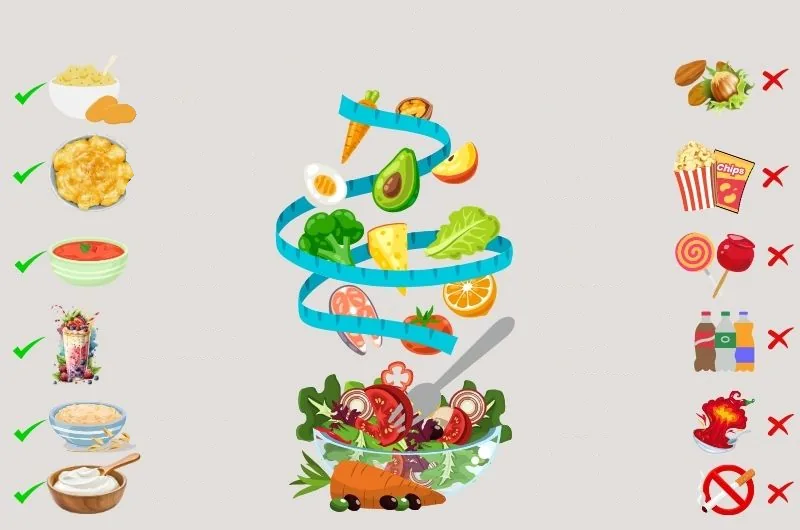

Питание в период заживления имплантовПюреЯичница- болтуньяСупСмузиКашаЙогуртТвёрдые орехиХрустящие снекиЛипкие сладостиГазировкаОстрая пищаКурение(суп-пюре)Что можно есть после имплантации зубов?
Идя на имплантацию зубов, которая вернёт вам улыбку и уверенность, вы многого ожидаете; однако дело не ограничивается самой операцией. Восстановление включает правильное питание, способствующее быстрому заживлению после имплантации. С момента, когда вы покидаете клинику, выбор пищи определяет, насколько хорошо организм восстановится после установки зубных имплантов.
Что я могу есть после имплантации зубов?
После имплантации следует есть мягкую и полезную пищу, чтобы снизить вероятность послеоперационных осложнений. В первые 24–48 часов рекомендуется не употреблять кислую или раздражающую пищу, например лимонад, острые блюда, помидоры и т. п., так как она провоцирует воспаление. Ешьте яйца и мягкую рыбу: они способствуют регенерации тканей и поддерживают иммунную систему. Также важно избегать твёрдой, хрустящей или липкой пищи, так как она может сместить кровяные сгустки или оказать давление на импланты.
Пить жидкость необходимо; однако не пейте горячие или газированные напитки — они могут усилить кровоток, что приводит к длительному кровотечению и раздражению в области операции, а также усиливает отёк. Питание после имплантации зубов должно быть мягким и богатым питательными веществами, чтобы ускорить заживление и свести к минимуму послеоперационные осложнения. В первые 24–48 часов избегайте всего слишком кислого или раздражающего, например лимонада, острых блюд, помидоров и т. п., потому что это усиливает отёк.
Клинические исследования показывают пользу достаточного количества витаминов A и C в рационе пациентов, поскольку они помогают формированию коллагена и заживлению ран. И последнее по порядку, но не по значению: не пейте через соломинку, потому что при всасывании создаётся разрежение, которое может вытянуть кровяной сгусток, образовавшийся в месте операции, что приводит к сильной боли, известной как сухая лунка, и замедлению заживления.
Что можно есть в первые 24–48 часов?
После имплантации зубов в течение 24–48 часов пациентам следует есть только мягкую пищу. Выбирайте, например, йогурт, яблочное пюре, овощные пюре и пищу пастообразной консистенции, не горячую. Согласно результатам перекрёстного анкетного исследования, опубликованным в журнале Clinical Implant Dentistry and Related Research, пациентам стоит есть творог и тофу, поскольку белок, особенно в этих двух продуктах, способствует заживлению тканей и помогает предотвратить бактериальную инфекцию. Следует избегать любых блюд с кислотами или специями, так как они ухудшают состояние и затягивают заживление.
Через сколько после имплантации можно нормально есть?
В большинстве случаев вернуться к обычному питанию можно через одну-две недели после имплантации в зависимости от объёма операции и скорости заживления у конкретного человека. В этот период десневая ткань и кость стабилизируются вокруг имплантов, что крайне важно для долгосрочного успеха. Данные исследований показывают, что первая и вторая недели после операции — самый критический этап, поэтому лучше придерживаться мягкой пищи, чтобы не травмировать область операции или имплант. Исследования предполагают, что правильное послеоперационное питание с постепенным возвращением к обычному рациону может помочь свести к минимуму осложнения и улучшить остеоинтеграцию.
Каких продуктов избегать после имплантации зубов
Правильный выбор продуктов после имплантации необходим для профилактики осложнений. Отказавшись от некоторых продуктов, вы защитите область импланта и ускорите заживление.
- Твёрдая пища (например, орехи, сырые овощи): создаёт давление на область импланта, и заживающим тканям трудно справиться с нагрузкой от твёрдых продуктов.
- Липкая пища (например, карамель, ириски): липкие продукты могут прилипать к импланту или швам, приводить к смещению импланта и замедлять заживление.
- Хрустящая пища (например, чипсы, крекеры): продукты с твёрдой текстурой могут создавать давление или оставлять крошки, что отрицательно влияет на область импланта.
- Острая пища: может раздражать нежные ткани вокруг импланта и усиливать боль.
- Жёсткое мясо (например, стейк, вяленое мясо): грубое мясо труднее жевать, и оно может создавать слишком большую нагрузку на имплант.
- Твёрдые конфеты: твёрдые леденцы травмируют заживающие ткани в области операции и продлевают восстановление.
- Мясо, требующее долгого жевания (например, стейк, вяленое мясо): его приходится долго пережёвывать, что вредно для импланта, поскольку он будет подвергаться расшатыванию.
- Жевательная резинка: может мешать заживлению, а также тянуть имплант в разные стороны.
- Попкорн: мелкие частички могут застревать рядом с имплантом и вызывать инфекцию или раздражение.
- Алкоголь: замедляет процессы заживления в организме, ослабляет иммунную систему и ухудшает кровообращение. Подробнее о вредном влиянии алкоголя на восстановление после имплантации рассказано в отдельной статье.
- Газированные напитки: пузырьки могут раздражать область операции и вызывать у пациентов раздражение или дискомфорт.
Хрустящие закуски (например, крекеры, чипсы): могут повредить заживающую область импланта.
Лучшие напитки после имплантации зубов
По сути, вода очень важна после имплантации: она ускоряет восстановление и снижает вероятность любых осложнений. Вода остаётся лучшим вариантом, так как помогает образованию новых клеток, поддерживает увлажнённость тканей и выводит продукты обмена из организма. Травяные чаи, например ромашковый, богатый противовоспалительными соединениями, также помогают уменьшить воспаление и способствуют заживлению раздражённых тканей и клеток; к тому же в них нет кофеина, в отличие от обычного чая или кофе.
Прозрачные бульоны, богатые питательными веществами и лёгкие для употребления, обеспечивают и жидкость, и необходимые для восстановления тканей белки. Также следует отказаться от продуктов с сахаром, газировки и алкоголя, так как они мешают заживлению, вызывая обезвоживание организма. Как показали исследования, достаточное потребление жидкости и питательных веществ ускоряет восстановление, поскольку способствует правильной регенерации тканей и уменьшает воспаление.
Советы по питанию после установки зубных имплантов
- Начните с мягкой пищи, например картофельного пюре, йогурта и яблочного пюре, чтобы не создавать давления на область импланта.
- Пейте много воды, чтобы избежать пересыхания области импланта
- Не ешьте твёрдую и хрустящую пищу, например орехи и чипсы, поскольку она может помешать заживлению повреждённой десны.
- Избегайте кислой и острой пищи, например апельсинов, острого перца и любых других продуктов, которые могут раздражать область импланта.
- Также избегайте горячих напитков, так как они вызывают отёк; лучше пейте больше холодных напитков или напитков комнатной температуры.
- Ешьте мягкую белковую пищу, например омлет и мягкую рыбу, чтобы способствовать формированию тканей.
- Не употребляйте продукты с сахаром и газированные напитки, чтобы избежать боли в горле и инфекции.
Через неделю добавляйте в рацион более твёрдую пищу, но по-прежнему не разжёвывайте твёрдые и липкие продукты, которые могут повредить импланты.